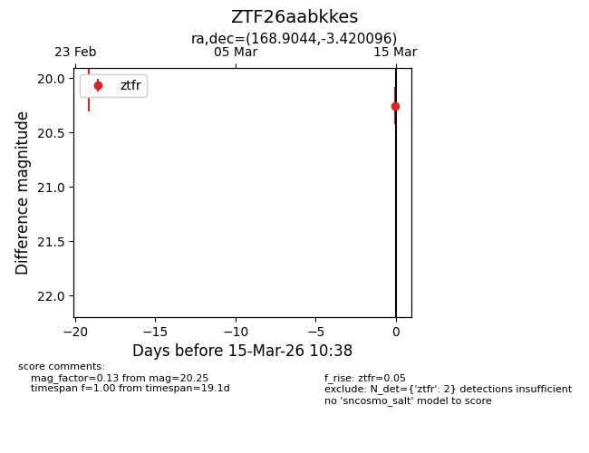
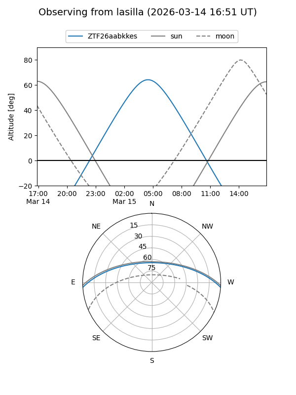
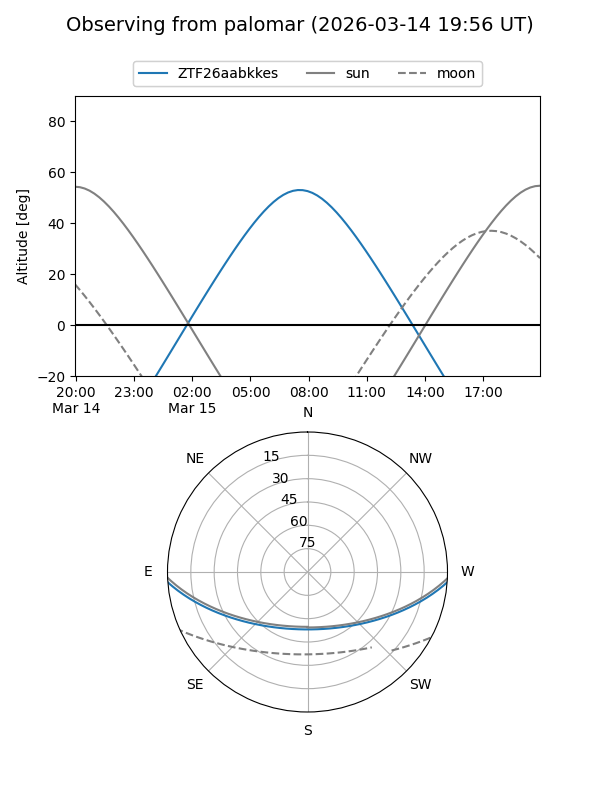

ZTF26aabkkes
Target ZTF26aabkkes at 2026-03-15 10:40
Aliases and brokers:
FINK: link
Lasair: link
ALeRCE: link
alt names
ZTF26aabkkes (ztf,fink_ztf)
Coordinates:
equatorial (ra, dec) = 168.9044,-3.42010
equatorial (HMS+DMS) = 11:15:37.05,-03:25:12.35
galactic (l, b) = (262.1028,+51.69082)
Flags:
Photometry:
last ztfr=20.25
2 ztfr detections
Lightcurve

Visibility


Additional plots